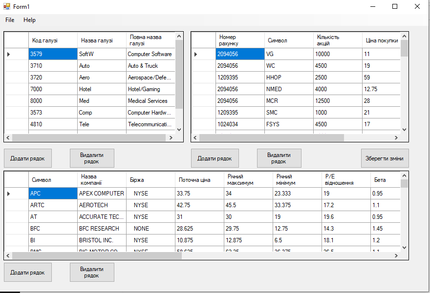

Цей додаток для брокерів надає повний огляд інформації про види промисловості та акції. Цей додаток не надає інвестиційних порад, а лише допомагає брокерам краще управляти наявною інформацією.
Головна сторінка
Після додавання рядка, потрібно ввести усі дані в кожен стовпець та натиснути на кнопку "Зберегти зміни" для збереження даних.